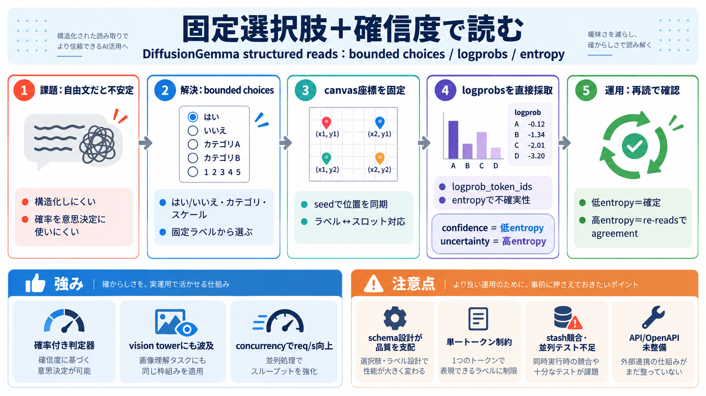

従来
自由文出力 → 構造化の解釈が不安定（確率も扱いにくい）

自由文出力 → 構造化の解釈が不安定（確率も扱いにくい）
bounded choices（事前固定）→ 1つ（または複数）を選び、確信度も返す
枠（復元対象の位置）を固定
選択肢の“座標”を同期
座標に対応する確率を採取
canvas位置 ↔ ラベル の対応を固定
多トークンラベルはクライアント側で単一トークンへ写像が必要
終端による停止を抑制
ステップの上限を制御
スキップして“読み取り”に徹する
entropy（不確実性）が低い → そのまま確定
entropy が高い → 追加 read で一致性（agreement）を取る
候補を切り詰めがち（ラベル集合全体の確率を直接は扱いにくい）
ラベルに対応する確率を直接採取 → 不確実性評価が安定
req/s 向上（concurrencyで伸長）
英語は高精度
schema 分解が誤りに直結
stash衝突 → HTTP 500
競合を前提に修正、回帰テストはこれから
structured reads（canvas固定）が vision tower に波及
end-to-end 検証・バックポート報告
extra_args / OpenAPI未整備
並列回帰の不足
スレッド上限なし、max_tokens×canvas幅の矛盾
a. 固定トークンを事前投入
b. commitせず収束 argmax を読み取る
c. 実行ステップ数を制限
d. 並列時の stash 衝突を修正
確率付きの判定器（選択＋不確実性）／re-reads運用まで見通し
API設計の正規化、並列回帰、運用上限・整合性チェック、透明な検証
canvas（枠）／read-only（読み取り専用）
logprobs / entropy（不確実性）
schema design、並列競合、API整備、上限管理
No references found